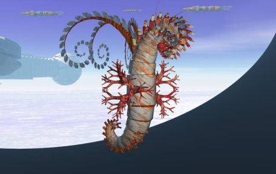

THE THRILE Introduction and Physical DescriptionThe Thrile are an asymmetrical plant-based race native to Yarrow V, a world with a near-equal concentration of water and land across its surface. Thrile resemble long, wormlike plants in structure; their body consists of several ringed segments which taper at the ends. Their main torso is covered by protective bark. The head of the Thrile has several flowering branches (the exact number varies between individuals) which radiate from the back of its head; the center torso features numerous prehensile root structures, and the rear of the Thrile has several reddish protrusions (gonads) which can fire clouds of spores into the air that serve both to assist in reproduction and as a defensive mechanism against predators. Thrile move via telekinetic flight; in essence, their psionic powers allow them to lift and maneuver their own bodies through the air. This is also the means by which they manipulate objects. Coloration varies; the trunk is often brown while the root structure and gonads are often a deep red. The flowering branches also display a wide variety of different colors which change seasonally. Thrile grow to a length of roughly six feet from end to end, and usually hover about one foot above the ground when not rooted. Senses and DietThe Thrile have an extremely unusual sensory structure. They do not sense the universe through any known physical mechanism; rather, they have psionic-based senses which gather information from living beings around them, translating other creatures' sensory input into the Thrile's own intelligence. Thus, the Thrile's psionic senses "tune in" to sensory-input-interpreting part of the brain (the sensorium) of a specific being (or many thousands of tiny beings, insects, or other creatures in a room or area) and provide perception of a room or area to the Thrile. The Thrile's mind is capable of sorting and using this raw sensory data and enabling the Thrile to interact with its environment. Aside from the Thrile's brain (which is thick, tubular in shape, and runs the entire length of its mostly organ-less body), the only sensory appendages or organs that the Thrile has are a pair of antennae which rise from one of the Thrile's flowering branches. These antennae boost the range of the Thrile's psionic senses, and regenerate if damaged or severed. Thrile consume sunlight via their flowering branches and nitrogen, carbon dioxide, and water from soil or bodies of water via their root structures. Unlike most plants, Thrile do not need to remain rooted indefinitely; they can move from place to place and have developed nitrogen-rich soils and supplements which reduce the time they need to spend feeding. Thrile communicate using their psionic talents. As with their ability to tap into other creatures' sensoriums, they can also reach the language centers of other beings' minds (including their own); thus the Thrile do not speak or communicate using sound waves or light waves but rather by causing the impression in the listener's mind that the Thrile is speaking. They are natural translators because of this – when you hear a Thrile speak, it is the Thrile's mind creating the sensation directly on the language centers of your brain rather than any physical effect on the environment. The Thrile do, however, have a written language; this somewhat artifical evolution for them came from their studies of the Shining Ones, and is used primarily for keeping large libraries of information rather than for personal, business or recreational uses. ReproductionThrile reproduce via the expulsion of seeds and/or spores from their dorsal gonads. Large clouds of these seeds/spores are ejected from these protrusions at various points in the Thrile's lifecycle, and can be fired at will if the Thrile is being pursued by a predator. Both seeds and spores are highly toxic to most animal life forms, and some predators can be turned into unwitting hosts for young growing Thrile if the seeds kill them; turning the would-be predator into a breeding ground for the Thrile's children. Of the hundreds of thousands of seeds a Thrile might produce in a lifetime, only a small number – between one and ten – ever produce new Thrile, as the seed forms are fragile and only grow in ideal conditions. Once ejected (into the body of a predator or into rich soil), the seedlings must be fertilized by another Thrile with its own spores. There is no sexual distinction between Thrile; the plants cycle between their male and female sexes during the course of the seasons on the planet they are on. They are male, and produce seeds, during fall and winter months; they are female and produce spores during spring and summer months; and on places with no seasons (such as the station) they are whichever sex they last were before arriving at the station. It takes some two years for a seedling Thrile to develop to the point where it can communicate with others of its kind, but even at that time, they are not possessed of strong psionic abilities. The Thrile will often return to the site of a spore or seedling ejection to see if any offspring have resulted. When they find a seedling, the parents take it to an Artifact Center to be exposed to the strong psionic radiation which serves as the source for most of the Thrile's unique abilities. Thrile pass on much of their knowledge to their offspring psionically. Thrile live for vast periods of time. The oldest living Thrile is 2,500 years old, though most live to about 1,000-1,500 years before expiring of natural causes. Culture and ArtThe unique origins of the Thrile make them scavengers of others' culture and art. They are not terribly creative beings, and their extended lifespans and slow pace of living lead to very little in terms of original artwork or other creative endeavors, though some individual Thrile do attempt to do such work. They borrow elements from other societies – some Thrile tattoo their outer barks in the manner of the Iyali or Grune. There are some original Thrile paintings and sculptures, done with the visual assistance of the animals whose sensoriums they use to perceive with. Most Thrile art is religious in nature. The Thrile hold the Shining Ones and their artifacts in high reverence, and most of their society revolves around this reverence; hence imaginative portraits of what these progenitors might look like, statues thereof, depictions and arrangements of artifact-like objects might decorate Thrile communities. Society and HistoryThe Thrile as a race were not originally intelligent, nor were they even mobile. These plants decorated the homes and covered the streets of the ancient cities of the Shining Ones on Yarrow IV; a world which appears to have been a major trading center for that ancient empire. When the Shining Ones passed from the annals of history – where, no one knows – they left behind many artifacts; most of which were buried and are difficult to find. On Yarrow IV, however, a planet which the Shining Ones performed many climactic and terrestrial modifications on, the artifacts and much of the Shining One's cities remained standing. Over the course of several hundreds of thousands of years, the ambient psionic radiation emanating from these artifacts served to mutate the plants which had by then taken over the city into intelligent beings. Slowly at first, but with increasing frequency, the plants developed self-awareness over time as they developed first brains and then strong psionic abilities to go with their newfound intelligence. They could use telekinesis to manipulate the world around them, and to fly themselves through the air, and thus the Thrile society began. With little competition for food or mates given their plantlike nature, the Thrile settled into a life primarily dominated by the pursuit of knowledge about the universe around them, specifically of their origins. The gift of their self-awareness came from an ancient race, and though many of these race's artifacts were present on Yarrow IV, much of their cities and artifacts had eroded, been lost, or were destroyed over the hundreds of thousands of years that the Thrile developed intelligence. Possessing an almost single-minded desire to learn more about their creators, the Thrile formed large universities and archaeological expeditions to unearth more information about the Shining Ones. They learned about the Shining One's language. They used their psionic abilities to dominate the minds and control almost every other life-form on their planet, using these nonintelligent beings as beasts of burden to do most of the labor while the rest of Thrile society focused on philosophy and the study of their creators. Eventually, when it became obvious that the Shining Ones had once had a civilization which spanned across the galaxy, the Thrile developed space travel and began to explore the universe. They dominated many of the races they encountered with their psionic abilities, and created many colonies, mostly devoted to the study of the Shining Ones and their artifacts. Their exposure to other cultures led them to become more curious about issues such as industry, economics, and trade; and so they scavenged these ideas as well, entering into Galactic society full-force. PsychologyWhile there is some variation on a theme throughout individuals of the Thrile race, they share many traits in common. Thrile are deliberators, and they often take a while to consider their actions, due to their long lifestyles. This places most Thrile in an interesting position given the current rapid advance of the Vl'Hurgh and the necessity to elect a new Galactic Emperor rapidly; hence, the Thrile are quite uneasy at the moment. They do not possess much in the way of emotions comprehensible to non-plant-based races; Thrile take pleasure in good "food" (for them) and in philosophical discourse. They tend to be quite clear in their communications with others, adapting other beings' idioms and also, unnervingly, being somewhat prescient in guessing what the individual is going to say next. However, the Pax Imperium prevents the Thrile from actively reading deeply into the thoughts of, or controlling the mind of, any of the major races of the Empire. Predominantly, the Thrile are thinkers and manipulators, fascinated by what other beings' thoughts are on matters which are important to the Thrile. Individual Thrile can be counted on to be solid and mostly unswerving when they make a declaration of intent. Unfortunately, they take a while to make these declarations. They keep their word, such as it is, and can be reliable in a fix. They do "laugh" and engage in social intercourse with other beings, but more often than not these are not genuine emotions but a camouflage the Thrile adapt to make other beings feel more comfortable. This occasionally shows through as false. Relations with Other RacesSORVU: (Rival) The Thrile and the Sorvu have quite guardedly neutral relations. The Sorvu are incredibly difficult for the Thrile to read and communicate with due to the dietary supplements the Sorvu have developed to protect themselves against psionic intrusion; this makes the sensorium input a Thrile gets from a Sorvu very clouded, and communication via the Thrile's means of imprinting its meaning via the language center of the target's brain somewhat stultified and confusing. The Thrile bear the Sorvu no particular animosity or suspicion (although the converse is definitely true); they just wish that the Sorvu would relax and let the Thrile into their minds like simple worker drones should. IYALI: (Neutral) The Iyali and the Thrile enjoy a mutual interest in science and philosophy, and an especially strong bond due to their mutual curiosity regarding the Shining Ones. However, as the Thrile perform most of the functions with their minds that the Iyali have developed technology for, there is a fundamental disconnect in their relations which is hard for either side to bridge. Regardless, trade and relations between the two races are cordial. GRUNE: (Allied) The Grune and the Thrile get along quite well, mostly because the Thrile find the Grune to be easily manipulated. The Grune provide military protection for many Thrile outposts and colonies, and are eager to get their hands on more of the Thrile's research into artifacts which has been used to boost the psionic abilities of non-Thrile in the past. As well, the Grune are relatively easy for the Thrile to "read". The Thrile can talk to the Grune in their own language – not just verbally, but by adopting the Grune's mannerisms and opinions in their relations, which leads to very warm relations between the races.
|